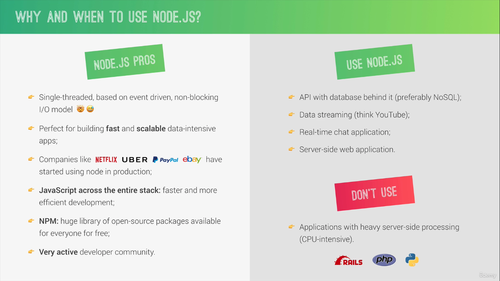
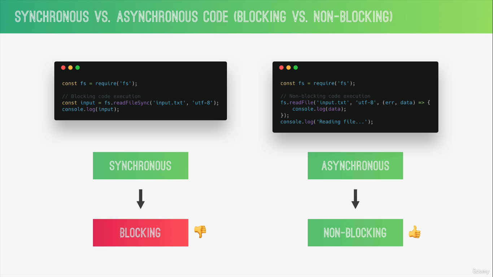
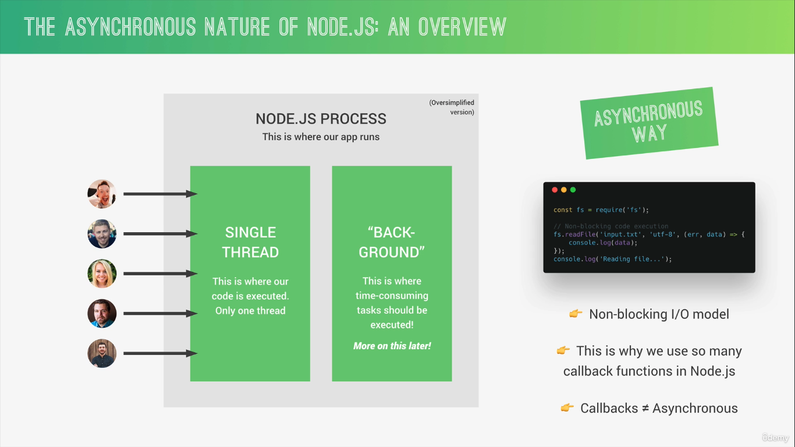
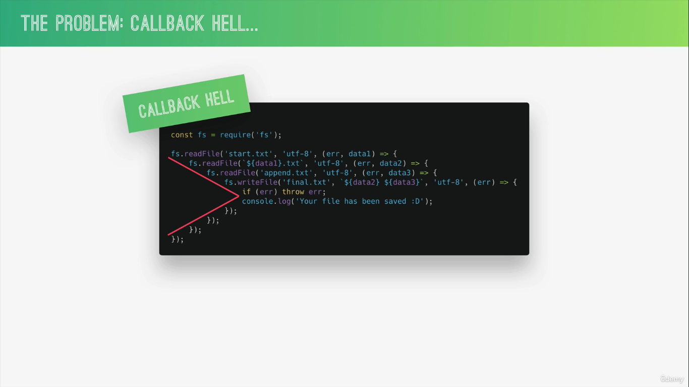

Backend Node Course
Table of Contents
1. Introduction to Node.js and NPM
1.1. What is Node.js and Why use it?
- Node.js is a Javascript runtime environment build on Goolge's open source V8 Javascript engine.
1.2. Why and When to use Node.js

1.3. Read and Write files in Node.js
const fs = require("fs"); const contents = fs.readFileSync("./txt/input.txt", "utf-8"); console.log(contents); const txt = `This is input txt: ${contents}`; fs.writeFileSync("./txt/output.txt", txt);
1.4. Blocking and Non-Blocking: Asynchronous nature of Node.js

1.4.1. Why do we need to have non blocking code?

- Since Node.js is single threaded runing a synchronous code will block the other users from doing anything and hence a asynchronous way is always preferred.
- The main problem while dealing the asynchronous code is the arrival of callback hell.

1.5. Reading and Writing files Asynchronously
const fs = require("fs"); // blocking synchronous way const contents = fs.readFileSync("./txt/input.txt", "utf-8"); console.log(contents); const txt = `This is input txt: ${contents}`; fs.writeFileSync("./txt/output.txt", txt); // non-blocking asynchronous way const contentsAS = fs.readFile("./txt/start.txt", "utf-8", (err, data) => console.log(data) ); console.log("Will be printed first");
// callback hell const contentsAsCh = fs.readFile("./txt/start.txt", "utf-8", (err, data1) => { fs.readFile(`./txt/${data1}.txt`, "utf-8", (err, data2) => { console.log(data2); fs.readFile("./txt/append.txt", "utf-8", (err, data3) => { console.log(data3); fs.writeFile("./txt/output.txt", `${data2}\n${data3}`, "utf-8", (err) => console.log("Written") ); }); }); }); console.log("Read it first");
2. Notes / Tips / References
- Using _ in the REPL mode fetches the result of the last evaluation.